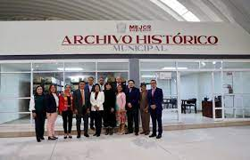

ARCHIVO MUNICIPAL
ARCHIVO HISTORICO


En el marco del 197 Aniversario de la Fundación de Tecámac, la alcaldesa Mariela Gutiérrez Escalante inauguró el Archivo Histórico Municipal, que incluye más de ocho mil cajas de documentación que forma parte de la memoria histórica de este municipio desde el año de 1820, así como expedientes de las últimas tres décadas.
La Presidenta Municipal dijo que este es un hecho histórico y trascendente, y señaló que una de sus grandes preocupaciones desde que asumió el cargo es conservar toda la historia de esta demarcación, en cuyo tema existió desdén, indolencia y desprecio en las pasadas administraciones.